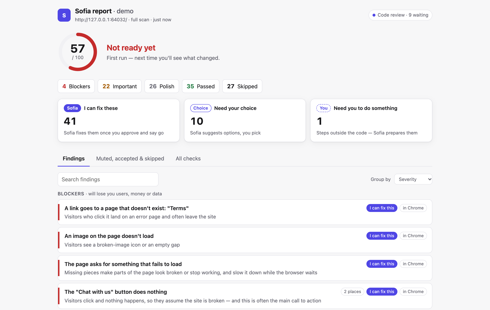
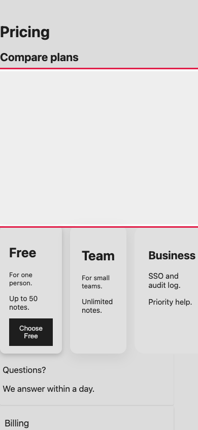
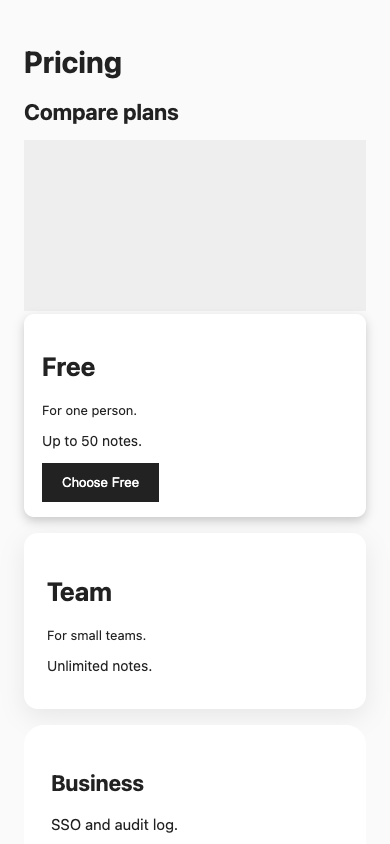
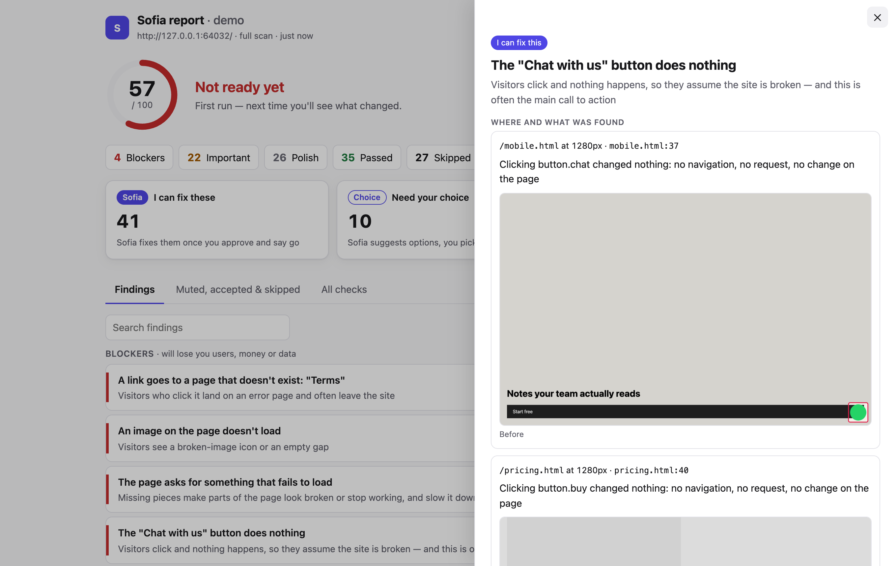

A plugin for Claude Code
Sofia checks what you built before launch, explains what's broken in plain words, and fixes only what you approve.
/plugin marketplace add avivalushai/sofia
In your own Chrome, at real phone sizes. Here, the pricing page on an iPhone, before and after one approved fix.
FoundThe page scrolls sideways on phones. Visitors drag it around and it feels broken.
FixedRe-checked at 375 and 390 pixels wide. It passes, so it counts as fixed.


The full report opens on your own computer and updates while things get fixed. Click any finding for the exact page, the line of code, and a screenshot.

Sofia never changes anything on her own. First a report, then a conversation, then a fix of only what you approved.
In your app's folder, tell Claude in your own words.
"Sofia, check my app"She clicks the buttons, fills the forms and reads the code. Checks that don't apply, like payments on a site without payments, are skipped, and she tells you why.
A score, the blockers by name, and the rest sorted by urgency. Ask why, push back, or mute something. She offers one compromise and respects a no.
She saves a checkpoint, fixes, and runs the check again. Only a check that passes counts as fixed, and every fix can be undone on its own.
Who fixes what
After you say yes. Each fix is its own saved change, so you can undo one without losing the rest.
Two or three options, the recommended one first.
Outside the code, like DNS records. She tells you exactly where to click.
Counts are the 63 checks live in the first version. The catalog has 175.
She shows, explains and recommends. She changes only what you approved, when you say go.
Something is fixed only after its check runs again and passes, not because the code changed.
Anything that needs judgment goes to a separate reviewer that hasn't seen your chat and must quote the exact line.
She won't submit real forms, send email or make purchases without asking first.
Every check that can be a script is a script, so results don't drift between runs.
Your code and results go nowhere. No accounts, no paid services.
You need Claude Code, Google Chrome and Node.js 20 or newer. If you've ever run your app on your own computer, you most likely have Node already.
/plugin marketplace add avivalushai/sofia/plugin install sofia@sofia"Sofia, check my app"
Or type /sofia:check. For a check that takes seconds, /sofia:check quick.
/plugin marketplace add avivalushai/sofia